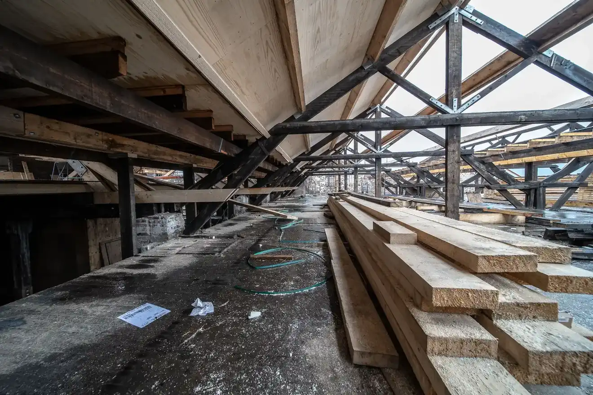

Ein Büro mit vierzehn Leuten in Köln, das die Abläufe öffentlicher Auftraggeber kennt.
Wir planen Schulen, Kitas, Verwaltungs- und Gewerbebauten im Rheinland, von der Machbarkeitsstudie bis zur Übergabe. Viele unserer Projekte entstehen aus Wettbewerben und VgV-Verfahren. Wir wissen, wie ein Schulträger entscheidet, was ein Gemeinderat sehen will und welche Unterlagen ein Fördermittelgeber braucht.
Das Büro wurde 2011 gegründet und wird von drei Geschäftsführenden geleitet, alle in die Architektenliste der Architektenkammer Nordrhein-Westfalen eingetragen. Die Projektverantwortung liegt bei ihnen, nicht bei einer wechselnden Bürostruktur.
Team
Vierzehn Personen: neun Architektinnen und Architekten, drei Bauzeichnerinnen und Bauzeichner, zwei in der Verwaltung. Jedes Projekt hat eine feste Projektleitung, die vom ersten Termin bis zur Abnahme dieselbe bleibt. Tragwerk, Haustechnik und Brandschutz koordinieren wir als Generalplaner mit festen Fachplanern.
Arbeitsweise
Bei Sanierungen und Erweiterungen planen wir den Bauablauf so, dass der Betrieb weiterläuft: Bauabschnitte nach Schulferien, Lärmfenster, getrennte Wege für Baustelle und Kinder. Kosten führen wir ab der Vorplanung nach DIN 276 fort und legen sie in jeder Phase offen. Renderings und Modellfotos kennzeichnen wir auch auf dieser Website als solche, damit niemand ein Bild für ein fertiges Gebäude hält.

Büro in Zahlen
- Sitz
- Köln
- Geschäftsführung
- Drei Geschäftsführende, alle in die Architektenliste der Architektenkammer NRW eingetragen
- Mitarbeitende
- 9 Architektinnen und Architekten, 3 Bauzeichnerinnen und Bauzeichner, 2 Verwaltung
- Kammer
- Architektenkammer Nordrhein-Westfalen
- Leistungsphasen
- 1 bis 9 nach HOAI, Generalplanung mit Fachplanern
- Auftraggeber
- Kommunen, Schulträger, kommunale Unternehmen, Gewerbe
- Region
- Köln, Rheinland, Nordrhein-Westfalen
- Verfahren
- Wettbewerbe, VgV-Verfahren, Direktbeauftragung